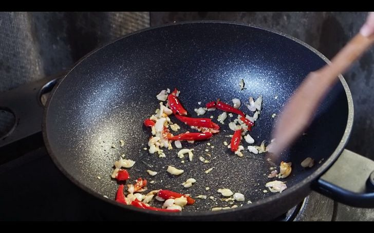
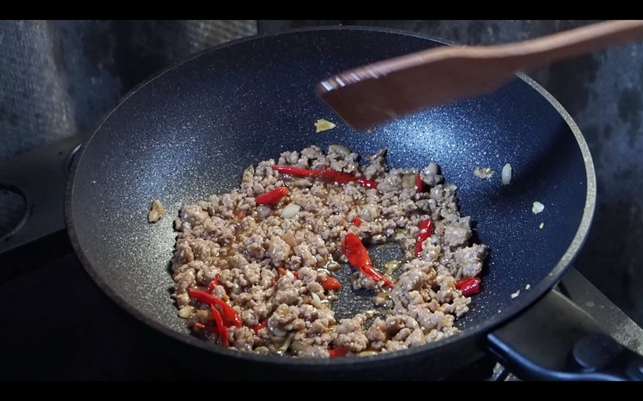

ผัดกระเพราหมูสับไข่ดาว

วัตถุดิบ
- พริกชี้ฟ้า หรือพริกขี้หนู 10-15 เม็ด (เลือกความเผ็ดตามชอบ)
- กระเทียม 10 เม็ด
- หมูบด 250 กรัม
- ผงปรุงรส 1 ช้อนชา
- น้ำตาลทราย 1 ช้อนโต๊ะ
- พริกไทยป่น 1/2 ช้อนชา
- ซอสปรุงรส 1 ช้อนโต๊ะ
- ซอสหอยนางรม 1 ช้อนโต๊ะ
- ซีอิ๊วดำ 1 ช้อนชา
- ใบกะเพรา 1 ถ้วย
- น้ำมันพืช 2 ช้อนโต๊ะ
- ไข่ไก่ หรือไข่เป็ด 1 ฟอง
- ข้าวสวย 1 จาน
TOP
วิธีทำผัดกะเพราหมูสับไข่ดาวไม่สุก
STEP 1 : โขลกพริกกับกระเทียมและใส่ผงปรุงรส

- โขลกพริกกับกระเทียมพอละเอียด เตรียมไว้
- ใส่ผงปรุงรสและน้ำตาลทรายลงไปในหมูบดเล็กน้อย จากนั้นนำไปลวกจนสุก ตักขึ้นสะเด็ดน้ำพักไว้จนแห้ง
STEP 2 : ตั้งกระทะใส่น้ำมัน เติมพริกและกระเทียม

- ตั้งกระทะใส่น้ำมันลงไป พอน้ำมันร้อน ใส่พริกและกระเทียม เติมน้ำเปล่าเล็กน้อย ผัดให้เข้ากัน
STEP 3 : ใส่หมูบดลงไปและผัดให้เข้ากัน

- ใส่พริกไทยป่นลงไป ตามด้วยหมูบด ผัดให้เข้ากัน
- ปรุงรสด้วยซอสปรุงรส น้ำตาลทราย ซอสหอยนางรม และซีอิ๊วดำ ชิมรสตามชอบ
STEP 4 : ใส่ใบกระเพรา

- ใส่ใบกะเพราลงไปผัดสักครู่ ปิดไฟ ตักราดบนข้าวสวย
STEP 5 : ทอดไข่ดาว

- ใส่น้ำมันพืชลงในกระทะ พอน้ำมันร้อน ใส่ไข่ลงไปทอดจนสุกกรอบ เสิร์ฟพร้อมข้าว
TOP
ตารางโภชนาการ
| สารอาหาร |
ปริมาณ |
g. |
| โปรตีน |
39.1 |
| ไขมัน |
23.8 |
| คาร์โบไฮเดรต |
54.1 |
| โซเดียม |
1794.1 |
| คลอเรสเตอรอล |
254 |
TOP
แสดงความคิดเห็น